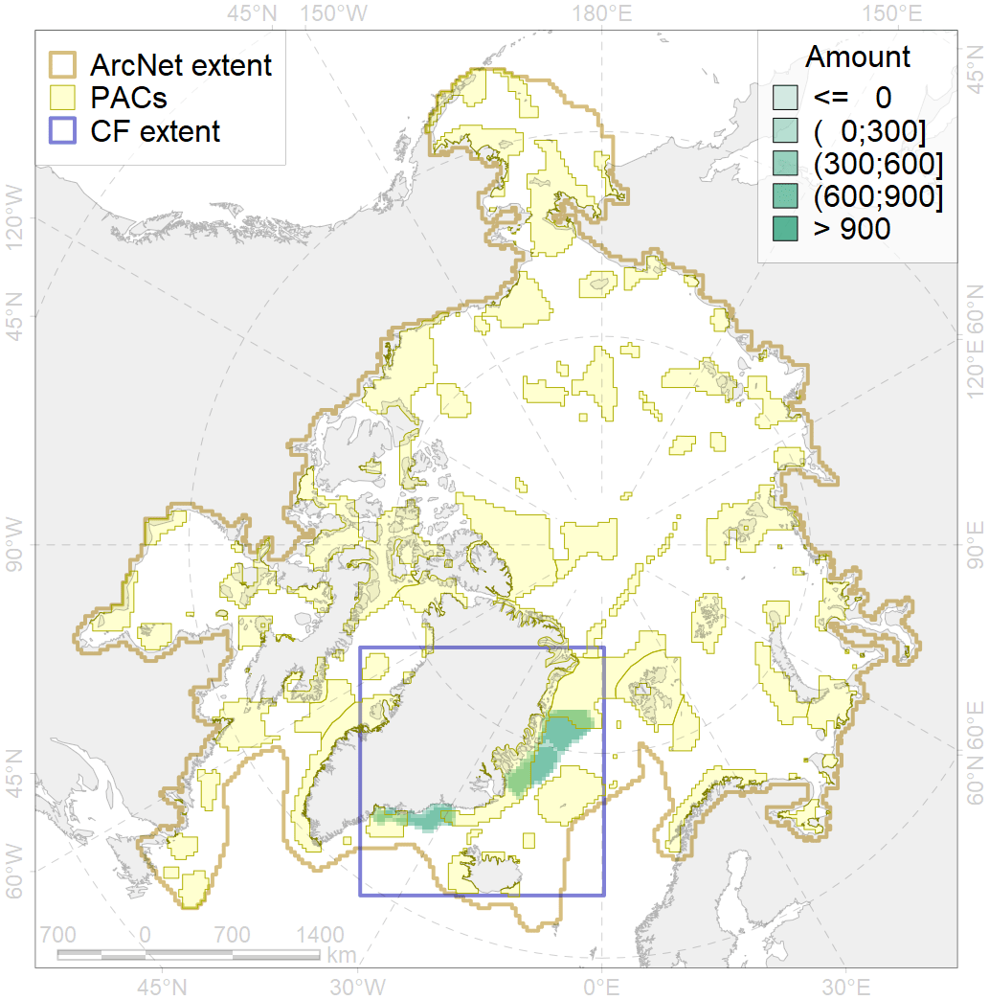
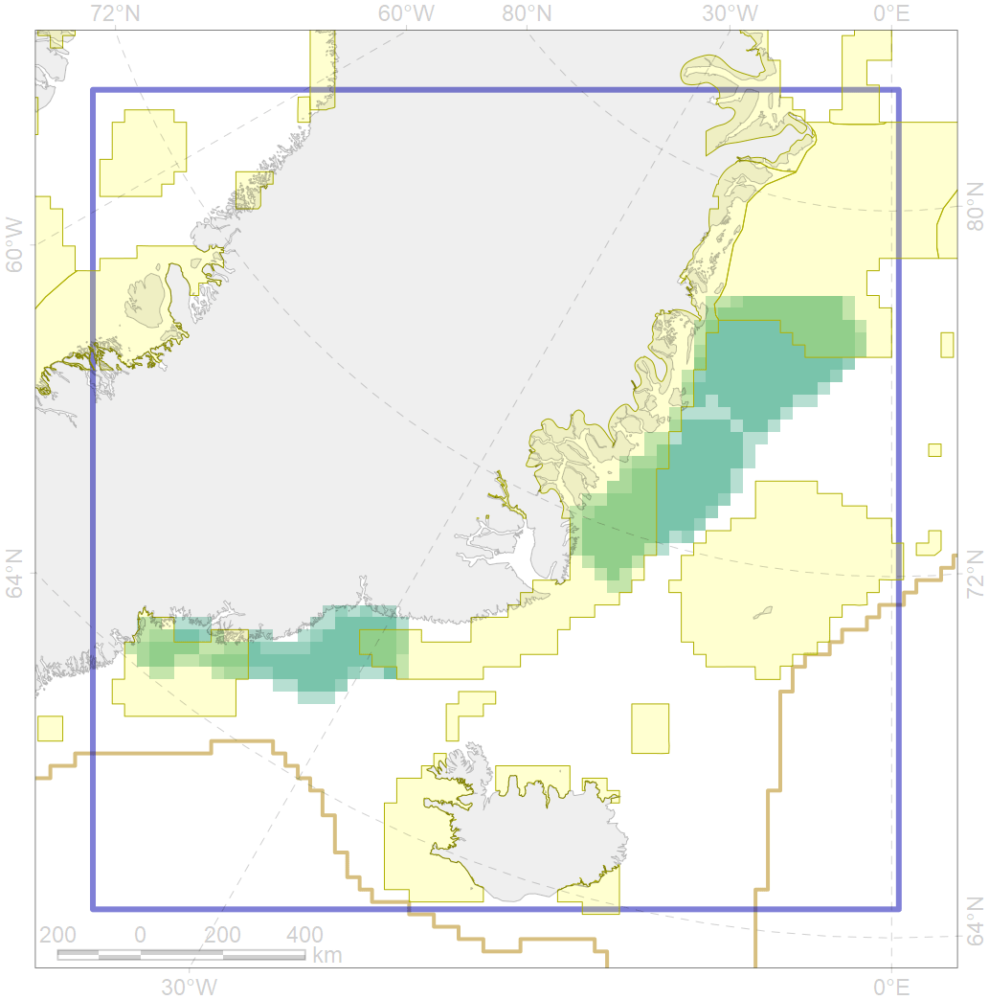

2028

| CF code | 2028 |
| CF name | Hooded seal molting areas |
| Time Period | 1995 |
| Source(s) | Folkow, Blix 1995 |
| Seasonality | June-July |
| Depth Horizon | 0-1000 m |
| Methodology | Field surveys, published maps, expert opinion |
| Use Restrictions | Open source |
| Author Name | Irina Trukhanova |
| Notes | |
| Scenario’s Target | 0.384 |
| Target Achievement | 0.398 (Scenario: 103.7%) |
| PAC | Share of the Total Amount within the PAC | Share of the Target Achievement for the ArcNet | PAC’s Contribution to the Target Achievement |
|---|---|---|---|
| 29 | 12.8%12.9% | 32.1%32.4% | 31.0%31.3% |
| 32 | 21.0%21.3% | 49.7%50.5% | 48.0%48.7% |
| 42 | 5.6%5.6% | 11.8%11.8% | 11.4%11.4% |
| inner | 39.4%39.8% | 93.7%94.7% | 90.3%91.4% |
| outer | 60.6%60.8% | 10.1%10.1% | 9.7%9.8% |
| † supplement values are for area consistence whereas principal values are for Accenter compatible gridded stats |